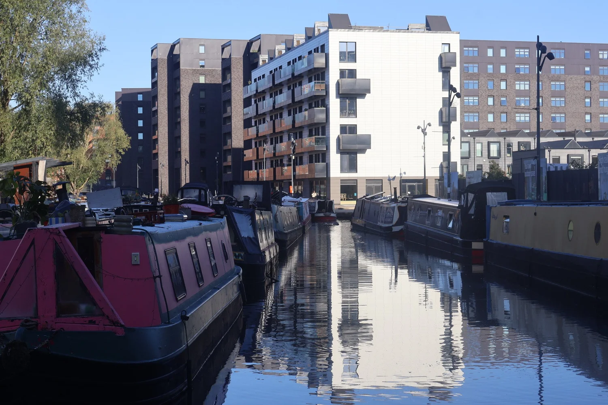
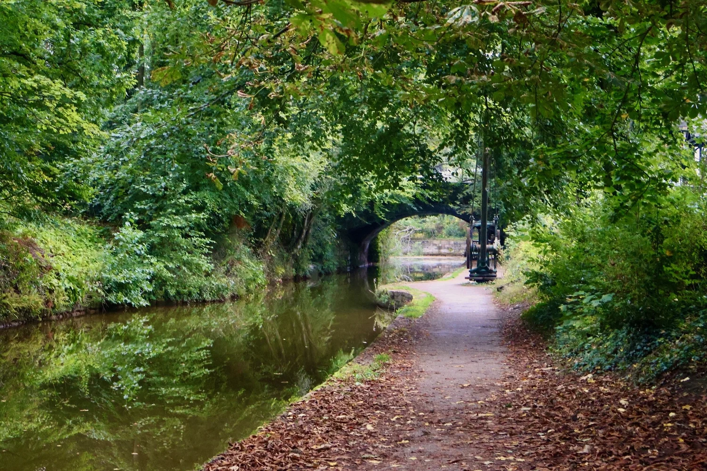
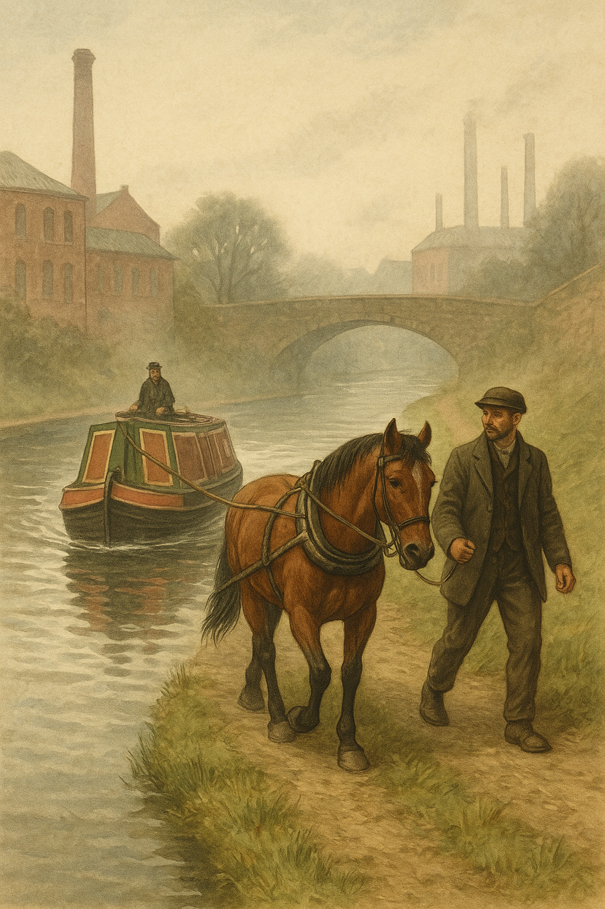
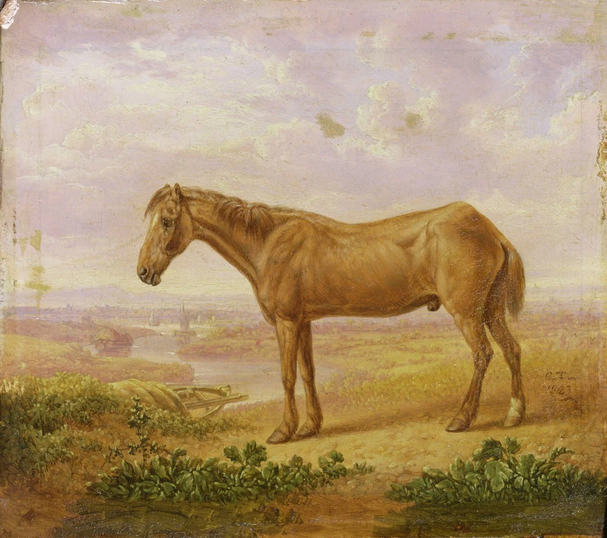
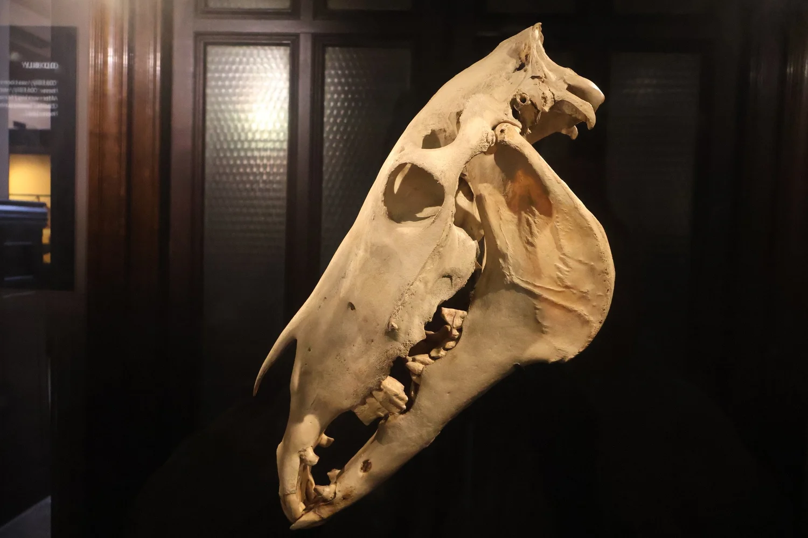
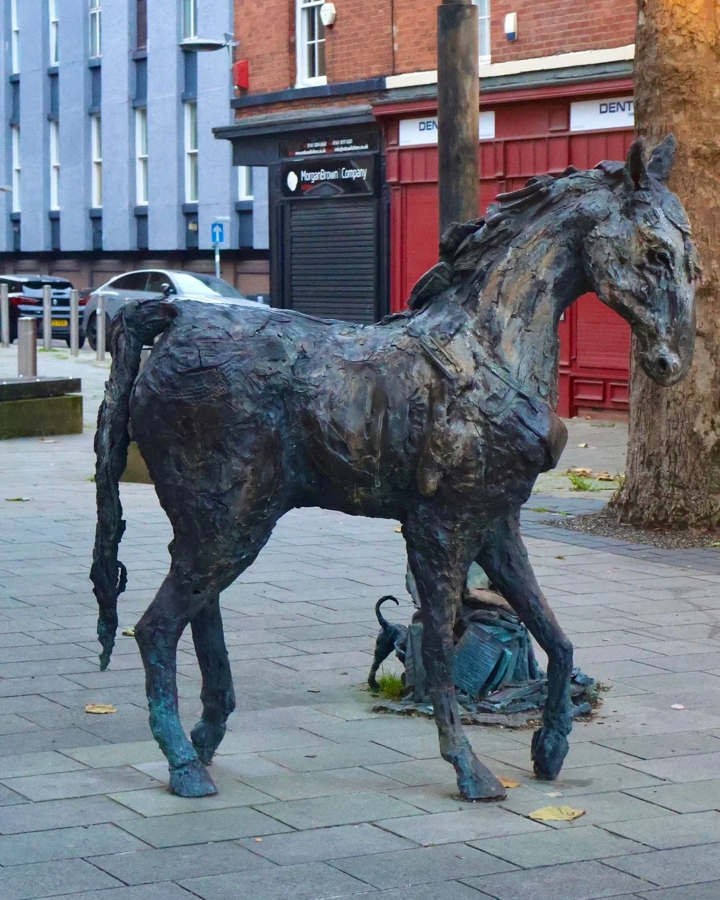

Old Billy the Barge Horse
In Manchester today, the canals are lined with cafés, student flats, and office towers. Boats drift more for leisure than for trade. Yet in the collections of Manchester Museum, behind glass, rests the skull of a horse who once knew these waters better than any living memory. His name was Billy — later called Old Billy — and he was no ordinary barge horse. Born in 1760 and living until 1822, Billy reached the almost mythical age of 62, a span unmatched in equine history. His story is both a biography and a reminder of the hidden muscle that once powered Britain's industrial rise.
From Farm to Towpath
Billy was foaled at Wild Grave Farm in Woolston, Cheshire, bred by Edward Robinson. Like many sturdy working cobs of the region, he was destined for labour — first as a plough horse, and soon after in the service of the Mersey and Irwell Navigation Company.

From the riverbanks near Warrington to the cuttings of the Rochdale Canal, his world was the waterway. He pulled boats into Castlefield Basin, where warehouses once towered above a tangle of locks, and along towpaths that today carry joggers and commuters rather than rope and hoof.

A Life of Labour
Day after day, Billy wore plain harness, pulling cargoes of coal, timber, and cotton. The work demanded stamina more than speed: twenty to thirty miles of steady walking, punctuated by bridges, locks, and tunnels. When barges needed unloading, he sometimes turned the great wooden gin wheels that hoisted goods onto the wharves.
Most tow horses endured this grind for only a few years. Billy carried on for decades. By the time he was fifty, he had already outlived several generations of working horses. Boatmen spoke of him with respect — not as a creature of beauty or pedigree, but as the horse who never seemed to stop.

"By the time he was fifty, Billy had already outlived several generations of working horses. Boatmen spoke of him with respect — not as a creature of beauty or pedigree, but as the horse who never seemed to stop."
Old Billy — At a Glance
- Born: 1760, Wild Grave Farm, Woolston, Cheshire
- Died: 27 November 1822, aged 62
- Bred by: Edward Robinson
- Employer: Mersey and Irwell Navigation Company
- Work: Canal towpath haulage — pulling barges loaded with coal, timber, and cotton
- Retirement: Estate of William Earle, Latchford; cared for by Henry Harrison
- Portrait: Painted by Charles Towne in 1822, his 62nd year
- Legacy: Skull held at Manchester Museum; stuffed head displayed in Bedford
Retirement with Dignity
Around 1819, Billy was retired to pasture at the estate of William Earle, a company director. There, in Latchford, he was cared for by Henry Harrison — the same man who had first handled him as a two-year-old colt. His teeth were worn down to stumps, so he was fed soft bran mashes. Yet even in old age he could still graze, and on fine days play among younger horses.

In 1822, artist Charles Towne painted Billy in his sixty-second year. The portrait shows a thin, aged horse — ribs showing, coat faded — but still alert, ears pricked, a quiet dignity in his stance. It is a remarkable record: a working animal acknowledged, named, and committed to canvas at a time when horses of his kind were rarely noticed at all. Later that year, on 27 November 1822, Billy died.
Legacy Preserved
Unlike almost every other working horse of his time, Billy was remembered. His skull remains in the Manchester Museum; his stuffed head is displayed in Bedford; portraits of him hang in collections across the region. A lithograph printed during his lifetime named him proudly: "Old Billy, 62 years old."

Beyond these artefacts, the places of his life still endure in fragments. The cut of the New Navigation at Warrington, the rings along the towpath where boats were tied, the ironwork on Castlefield's bridges — all whisper of his era. In Manchester's Gay Village, a bronze horse sculpture stands on Canal Street, a small reminder of the countless equine footsteps that once lined the water.

What Billy Stands For
Walking Manchester's canals today, it is difficult to imagine the labour they once demanded. The towpaths are jogged and cycled, not worn by hooves. Yet in the museum's displays, Billy still looks back at us.
His story is more than a curiosity of longevity. It is a reminder that progress was built on lives like his — steady, uncelebrated, and, in his case, remarkably enduring. Billy the barge horse may be gone, but his memory lingers: a witness from another age, and perhaps the oldest horse the world has ever known.
Related Stories

The Return of the Horse: How One Animal Changed the Ancient World
Long before the canal towpath or the cavalry charge, the domestication of the horse set the ancient world in motion. This is the story of that transformation.

Lords of the Southern Plains: The Rise and Fall of the Comanche Horse Nation
For the Comanche, the horse was not a means of travel but the foundation of warfare, survival, and freedom. On the Southern Plains, they forged a style of horsemanship that reshaped power across a continent.

The Side Saddle: An Evolution Shaped by Constraint, Craft, and Culture
The side saddle was not a decorative tradition but a technical response to social constraint. This article traces its evolution from medieval Europe to its peak in British fox hunting.